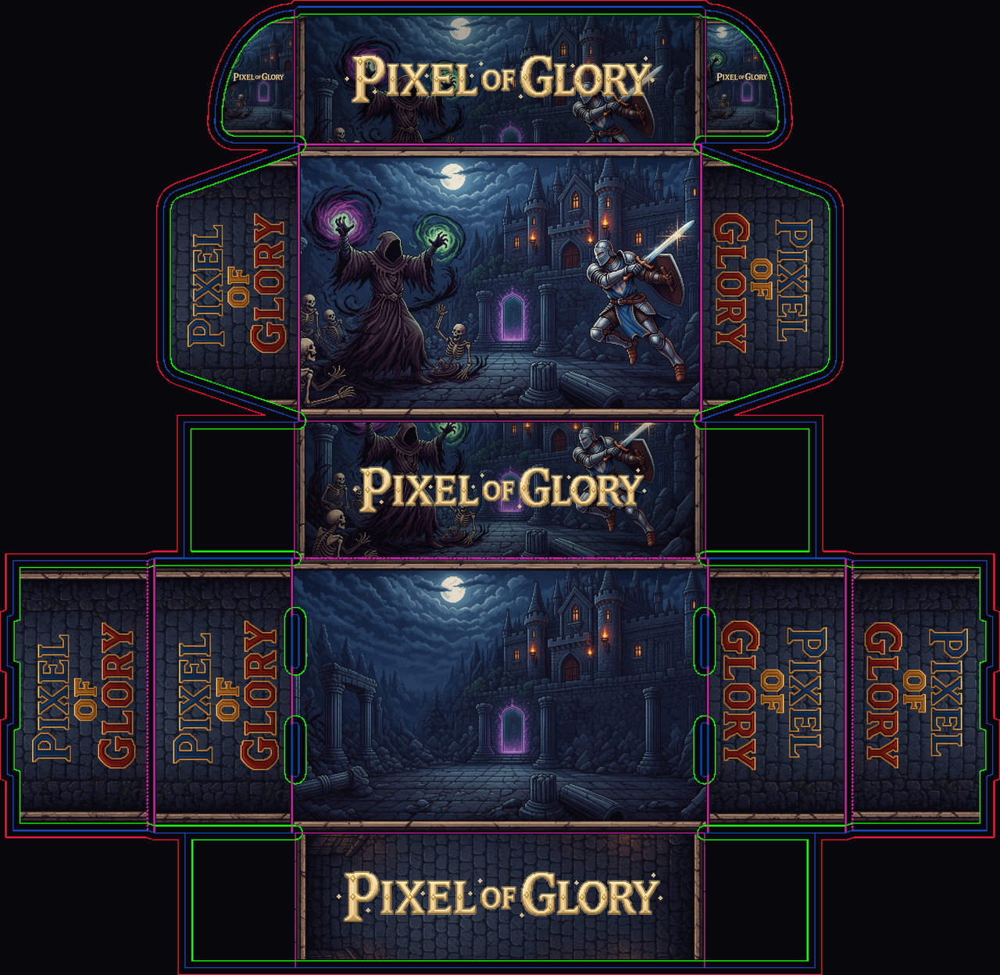
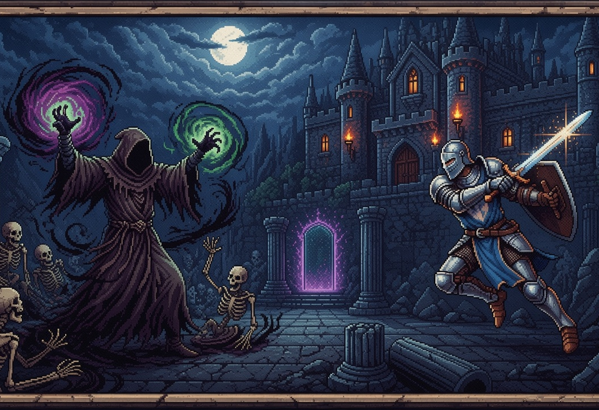
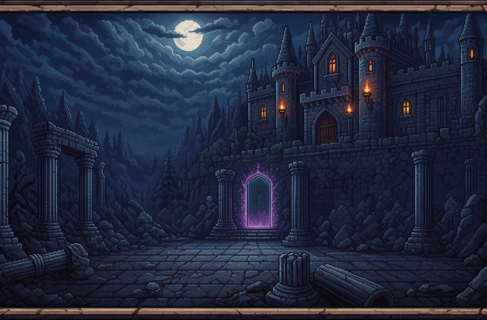
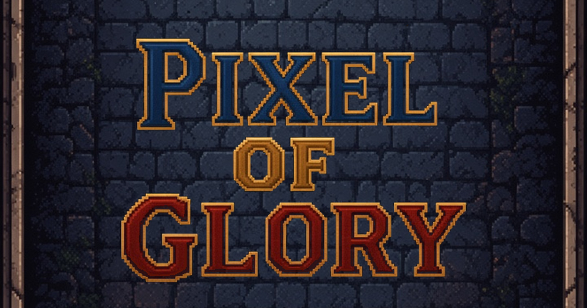
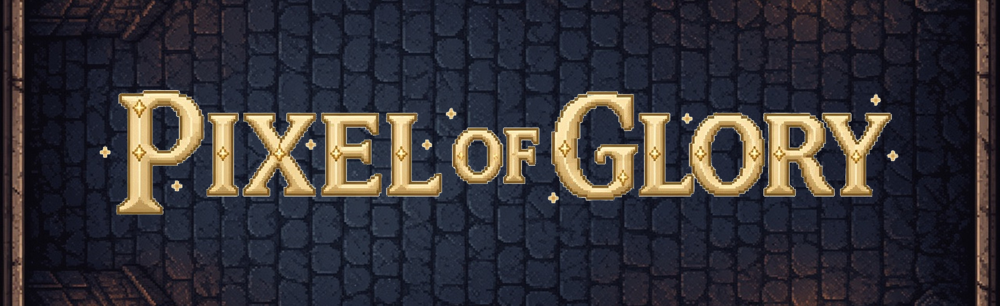

exemple_mockup.jpgExemple d’habillage : bataille nécromancien / chevalier sur le dessus, cour du château vide sur le dessous, logo Pixel of Glory sur les côtés. Cinq paysages sans titre plus un parchemin transparent, à superposer pour y écrire les infos.
Côté (logo) · dessus · bande avant · dessous.
exemple_mockup.jpg
exemple_net.jpg
faces/dessus.jpg
faces/dessous.jpg
faces/cote_debout.jpg
faces/avant.jpgLégères variations du même tableau. Fichiers print dans sources/ (70 cm de large, 16:9) et recadrage 70×35 cm dans sources/print_70x35/.


— PNG séparé, fond transparent, même taille que le paysage.


sources/parchemin.png